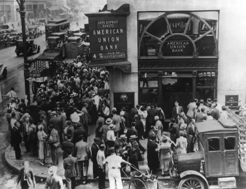
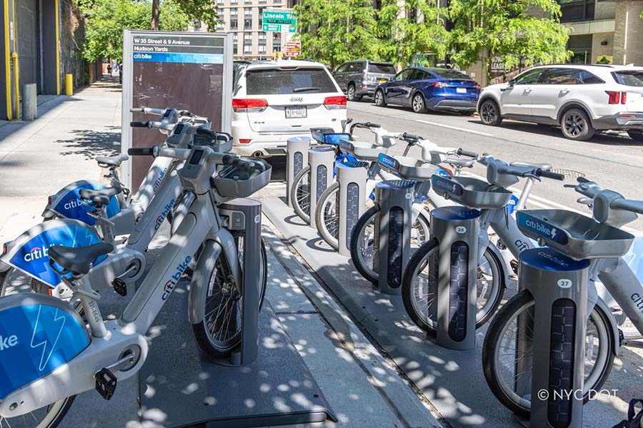

Mandy Langlois Portfolio
Data Analyst| Making Complex Data Understandable and Accessible.
skilled in SQL, R, Excel, Tableau
@ashmandy
This Research project used a mix method approach, combining computational text analysis, data visualization,
and qualitative narrative analysis to explore gendered patterns in the relationship between socioeconomic status and education
within the Southern Life Histories.
Tech stack: R Markdown, GitHub


Analyzed 1.5M+ Citi Bike trips from January 2025 using MySQL to uncover demand patterns and rider behavior differences. Peak demand hit 114K trips at 5 PM on weekdays versus 1 PM on weekends, reflecting a clear commute vs leisure split. Members dominated trip volume while casual riders showed higher round-trip rates (2.97% vs 1.20%), suggesting distinct riding motivations.
Tech stack: SQL, GitHub

An Excel-based analysis of global bike sales data spanning 2015–2016. I cleaned and structured raw data, built pivot tables, and surfaced key business insights, including $84.8M in total revenue, a 38% profit margin, and a 50% profit increase in accessories. Identified regional performance trends across the U.S., Australia, and Europe, and tracked quarterly margin growth from 33% to 51%, highlighting improved cost control over time.
Tech stack: Excel, GitHub
Analyzed medical insurance data in R to identify key cost drivers and build a predictive model. Performed data cleaning, visualization, and correlation analysis across variables including age, BMI, smoking status, and number of dependents. A multiple linear regression model with interaction terms achieved an R² of 0.81 and an RMSE of $5,100, indicating strong predictive accuracy. Smoking status emerged as the dominant cost driver, adding roughly $21,000 to expected charges with BMI and age as secondary factors.
Tech stack: R, GitHub